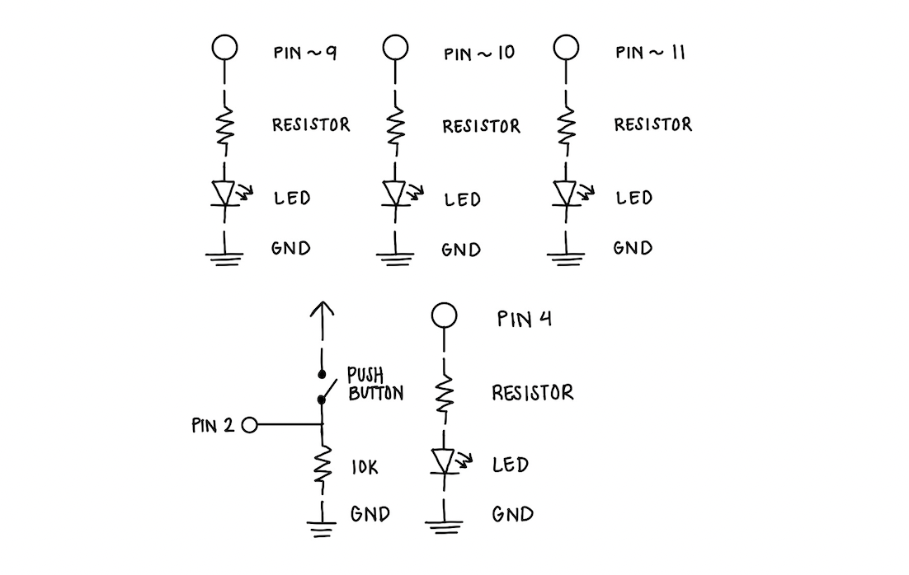
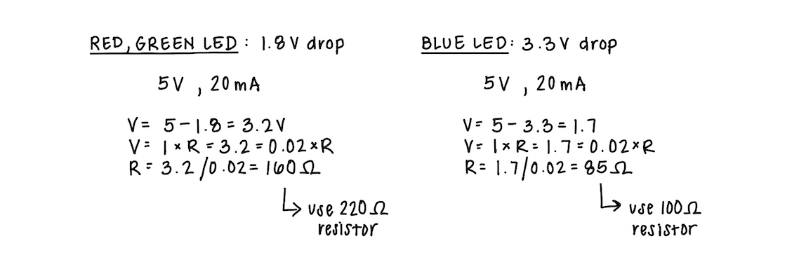

My Schematic
 Image of my schematic with labeled components, including pins, resistors, LEDs, pushbuttons,and ground.Resistance Calculation
 Image of my calculations for the resistance needed for my circuit. I used 220 ohm resistors for the red and green LEDs and a 100 ohm resistor for the blue LED.My Circuit
 Image of my physical circuit, "Fade", with all components connected.
Image of my physical circuit, "Fade", with all components connected.
My Firmware - EDIT COMMENTS
/*
Analog Input
Demonstrates analog input by reading an analog sensor on analog pin 0 and
turning on and off a light emitting diode(LED) connected to digital pin 13.
The amount of time the LED will be on and off depends on the value obtained
by analogRead().
The circuit:
- potentiometer
center pin of the potentiometer to the analog input 0
one side pin (either one) to ground
the other side pin to +5V
- LED
anode (long leg) attached to digital output 13 through 220 ohm resistor
cathode (short leg) attached to ground
- Note: because most Arduinos have a built-in LED attached to pin 13 on the
board, the LED is optional.
created by David Cuartielles
modified 30 Aug 2011
By Tom Igoe
This example code is in the public domain.
https://docs.arduino.cc/built-in-examples/analog/AnalogInput/
*/
int sensorPin = A0; // select the input pin for the potentiometer
int ledPin = 13; // select the pin for the LED
int sensorValue = 0; // variable to store the value coming from the sensor
int ledB = 10; // simple red LED
void setup() {
// declare the ledPin as an OUTPUT:
pinMode(ledPin, OUTPUT);
pinMode(ledB, OUTPUT);
Serial.begin(9600);
}
void loop() {
// read the value from the sensor:
sensorValue = analogRead(sensorPin);
if (sensorValue <= 100){
Serial.println(sensorValue);
analogWrite(ledB, 0);
// turn the ledPin on
digitalWrite(ledPin, HIGH);
// stop the program for milliseconds:
delay(sensorValue);
// turn the ledPin off:
digitalWrite(ledPin, LOW);
// stop the program for milliseconds:
delay(sensorValue);
} else {
digitalWrite(ledPin, LOW);
analogWrite(ledB, 255);
}
}
My Circuit's Operation
Video of my circuit in operation, with a fading RGB LED, red LED, and pushbutton.Additional Questions
1: In your voltage divider, can the variable resistor be either R1 or R2 or does it need to be one or the other?
Justify your answer with example calculations.
Answer
2: Draw a graph where the x-axis is time and the y-axis is voltage.
Plot the voltage at V-measure of your voltage divider of your shared gif.
Answer
3: AnalogWrite and analogRead are respectively 8-bit and 10-bit values.
Imagine you had 10-bit PWM and a 16-bit analog-to-digital converter instead.
How would this change your map() code? Explain your answer.
Answer
4: Did you use AI tools in completing this assignment?
If yes, please provide details on how/when, as well as a brief reflection.
If no, you can either leave this question blank, or provide other information if you'd like.
Answer